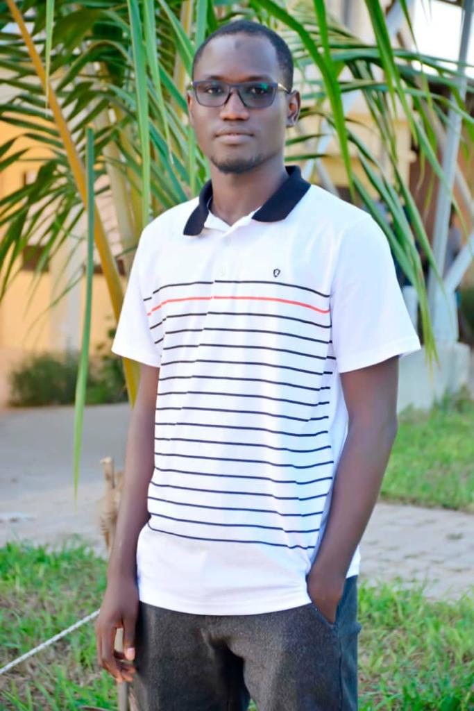

- Nom: Ndiaye
- Prénom: Abdourakhmane
- Adrésse: Saint-louis/sénegal
- Nationalité: Sénégalaise
- TEL: +221 77 132 32 01
- Email: Abdourakhmanendiaye48@gmail.com
Développeur Full-Stack
Python & Django
Formations
2020-2021:
Licence Informatique - Univérsité Virtuelle du sénégal (UVS)
2020-2021:
Certificat de Specialisation en Informatique - ESTEL-DAKAR
2020-2021:
Attestation de suivi délivrée par l'Agence National de sécurité des Systémes d'Information
(ANSSI)
2017-2018:
Baccalauréat
Expériences Profesionnelles
CROUS/UGB:
2 ans
CDD Technicien Supérieur en Informatique
- conception site web du CROUS
- Gestion du systémé d'hebergement et de coodification des Etudiants
- Apporter des solutions informatiques aux PATS
SAHAM Assurance:
3 mois
Stage de découverte d'Entreprise
- Assistance à la conception de systéme de gestion de base de données
Compétences
- HTML
- CSS
- Bootstrap
- Développement Front-end
- Python
- Django